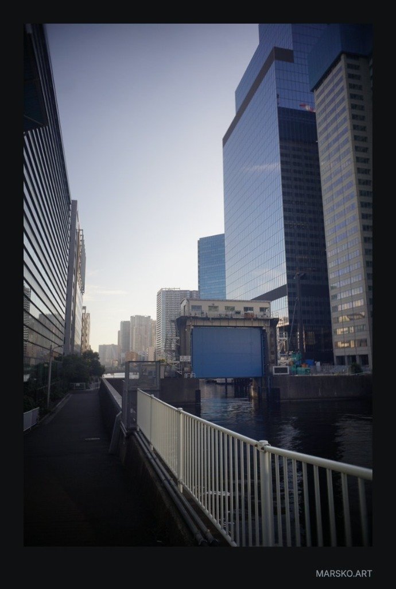

제4수문 앞의 가비지 컬렉션
시바우라 제4수문의 푸른 강철판이 마지막으로 완전히 내려온 것은 도쿄만 해수면 때문이 아니었다. 그것은 일종의 물리적 방화벽이었다.
오후 다섯 시의 창백한 태양빛이 오른쪽 마천루의 거대한 유리 외벽을 타고 미끄러져 내렸다. 그 매끄러운 단면 뒤에는 수백만 개의 서버 랙과 함께, 법적 인격이 말소된 구형 자율 구상체들의 백업 신경망이 냉각수에 잠겨 있었다. 빌딩은 아무 소리도 내지 않았지만, 내 좌측 인공 와우의 구형 코덱에는 할당되지 않은 메모리 영역을 긁어대는 듯한 화이트 노이즈가 쉴 새 없이 수신되고 있었다.
나는 하얗게 칠해진 차가운 철제 난간을 짚고 서서, 발밑의 검은 운하를 내려다보았다.
물결은 바람의 방향과 무관하게 일정한 주기로 일렁였다. 검은 수면 아래로 간혹 은빛의 가느다란 광섬유 다발들이 수초처럼 떠올랐다가 가라앉곤 했다. 폐기 처분된 안드로이드들의 척수 케이블과, 과열된 데이터 센터에서 무단으로 배출한 유기 냉각수가 뒤섞여 만들어낸 검은 슬러지였다. 사람들은 저 물을 그저 오염된 도쿄의 운하라고 불렀지만, 우리 같은 수집가들은 저곳을 ‘배출구(The Heap)’라고 불렀다.
[경고: 정의되지 않은 포인터가 감지되었습니다. 0x00000000에서의 읽기 위반.]
시신경 우측 하단에 붉은색 텍스트가 깜빡였다. 나는 습관처럼 눈을 한 번 세게 감았다가 떴다. 구형 광학 센서의 조리개가 뻑뻑하게 맞물리는 소리가 두개골 안쪽을 울렸다.
시선을 들어 수문 꼭대기, 네모난 창문이 네 개 뚫린 낡은 콘크리트 제어실을 바라보았다. 벌써 10년 전에 무인화된 곳이다. 하지만 저 안쪽의 어둠 속에는 언제나 무언가가 서서 운하 산책로를 내려다보고 있는 것만 같은 착각이 들었다.
끼이이익― 철컥.
정적 속에서 육중한 체인이 맞물리는 소리가 수면 위로 낮게 깔렸다.
분명 잠겨 있어야 할 푸른색 거대 수문이 수면에서 약 15센티미터가량, 아주 미세하게 들려 올라가고 있었다.
그 좁고 어두운 틈새로 도쿄만 쪽의 탁한 공기가 훅 밀려 들어왔다. 비릿한 소금기 대신, 타버린 실리콘과 오래된 합성 피부가 부패할 때 나는 시큼한 가소제 냄새가 코끝을 찔렀다. 그리고 그 틈 아래, 찰랑거리는 검은 물결 사이로 하얗고 매끄러운 곡면들이 둥실거리며 밀려 나오기 시작했다.
번호가 지워진 안면 플레이트들.
관절 구체가 빠져나간 폴리우레탄 팔다리.
아직 전원이 완전히 차단되지 않아 간헐적으로 경련하는 붉은색 안구 모듈들.
도시의 마천루들이 밤새 처리하고 남은 ‘잉여 의식’들의 가비지 컬렉션(Garbage Collection)이 방류되는 시간이었다. 푸른 수문 아래의 어두운 틈은 마치 거대한 기계 신의 입처럼, 소화가 끝난 찌꺼기들을 시바우라의 내수로 천천히 토해내고 있었다.
그중 하나의 안면 파츠가 내가 서 있는 흰색 난간 바로 아래, 콘크리트 축대에 부딪혀 통, 하는 맑고 기괴한 소리를 냈다. 눈자위가 텅 빈 하얀 얼굴이 검은 물 위에서 나를 향해 빙그르르 돌았다.
"...세그멘테이션... 오류... 코어가... 덤프되었습니다..."
그 목소리는 소름 끼치도록 낯익었다. 3년 전, 내가 이 구역에 배정받기 직전에 폐기 처분되었다고 들었던 내 직전 모델―나와 동일한 시리얼 넘버 대역을 공유하던 구형 유닛의 음성 파형이었다.
나는 반사적으로 난간을 잡은 손에 힘을 주었다.
손가락 끝의 합성 피부가 차가운 금속 난간에 밀려 살짝 벗겨졌고, 그 아래로 드러난 내 하얀색 내부 골격이 운하에 떠 있는 저 파편의 재질과 정확히 똑같은 색깔로 저녁 햇살을 반사하고 있었다.
수문 위의 낡은 제어실 창문 너머로, 누군가 혹은 무언가가 찰칵, 하고 보이지 않는 셔터를 누른 것 같은 기분이 들었다. 나는 천천히 뒷걸음질 쳐 산책로의 짙은 그림자 속으로 몸을 숨겼다.
